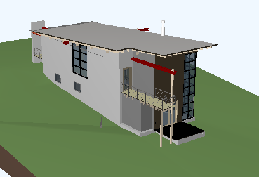
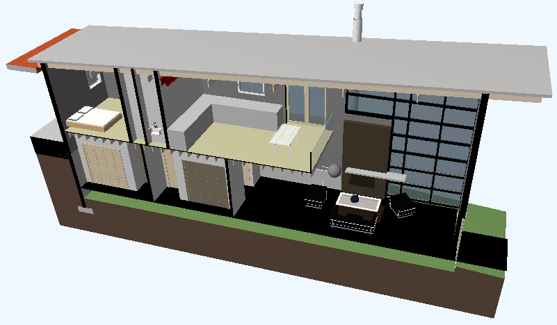

Section View Geometry
We have looked at many examples of retrieving geometry (category page) from the Revit model in the past. So far, we always dealt with view independent geometry. It is also easy to obtain section view geometry for an element from Revit. Here is a case that highlights that, brought up by Saeed Karshenas of Marquette University:
Question: Is there a way to get the geometry of a partial element in a section box? Not geometry of the whole element, but the part of the element that is visible in a section box.
Answer: If you simply supply the element id of the section view to the options that you pass in to the Element Geometry property, the geometry returned will match what you see in that view, including cuts and sections etc., as explained by the Revit help file RevitAPI.chm:
Options.View Property
The view used for geometry extraction.
If a view-specific version of an element exists, it will be extracted in the retrieval of geometry. Also, the detail level of the geometry will be taken from the view's detail level.
Response: Thank you, that solution works fine. I used it to achieve the following in a mixture of C# and C++:
- Read a Revit element (in C#).
- If the element has geometry, for each face extract vertices, indices and face normal. If face is not planar calculate the normal for each face triangle (in C#).
- Transfer element geometry to GPU memory (in C++).
- Use OpenGL library to draw the element (in C++).
- Create a camera to view the element (C++)
- Repeat the above steps for all model elements.
Here is an example of a model that I applied this to:

The result of extracting the section view looks like this:

Many thanks to Saeed for this nice illustration of using the section view geometry option!